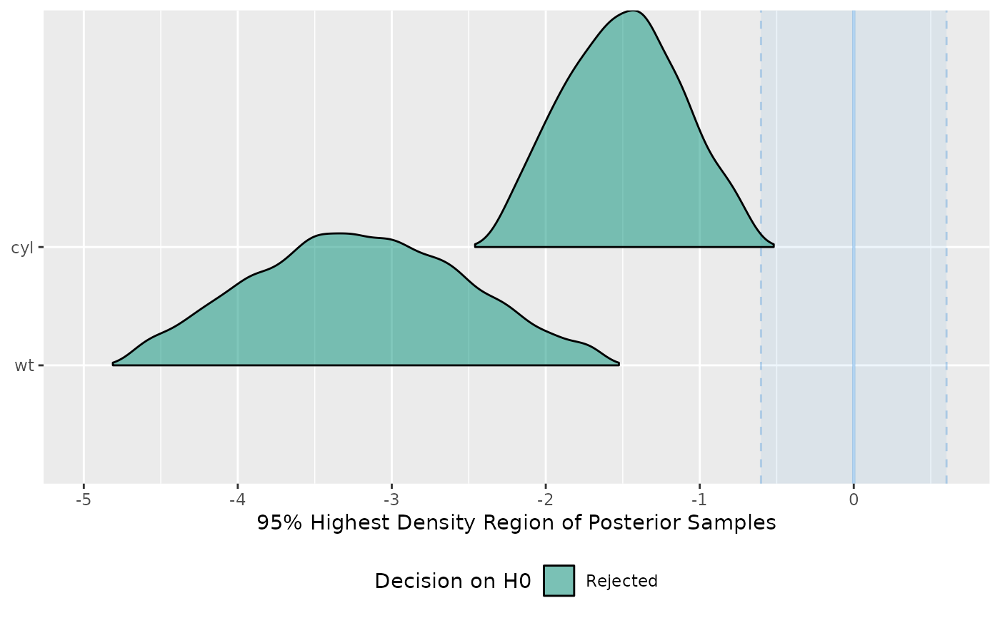

Perform a Test for Practical Equivalence for Bayesian and frequentist models.
Usage
equivalence_test(x, ...)
# S3 method for default
equivalence_test(x, ...)
# S3 method for data.frame
equivalence_test(x, range = "default", ci = 0.95, verbose = TRUE, ...)
# S3 method for stanreg
equivalence_test(
x,
range = "default",
ci = 0.95,
effects = c("fixed", "random", "all"),
component = c("location", "all", "conditional", "smooth_terms", "sigma",
"distributional", "auxiliary"),
parameters = NULL,
verbose = TRUE,
...
)
# S3 method for brmsfit
equivalence_test(
x,
range = "default",
ci = 0.95,
effects = c("fixed", "random", "all"),
component = c("conditional", "zi", "zero_inflated", "all"),
parameters = NULL,
verbose = TRUE,
...
)Arguments
- x
Vector representing a posterior distribution. Can also be a
stanregorbrmsfitmodel.- ...
Currently not used.
- range
ROPE's lower and higher bounds. Should be
"default"or depending on the number of outcome variables a vector or a list. In models with one response,rangeshould be a vector of length two (e.g.,c(-0.1, 0.1)). In multivariate models,rangeshould be a list with a numeric vectors for each response variable. Vector names should correspond to the name of the response variables. If"default"and input is a vector, the range is set toc(-0.1, 0.1). If"default"and input is a Bayesian model,rope_range()is used.- ci
The Credible Interval (CI) probability, corresponding to the proportion of HDI, to use for the percentage in ROPE.
- verbose
Toggle off warnings.
- effects
Should results for fixed effects, random effects or both be returned? Only applies to mixed models. May be abbreviated.
- component
Should results for all parameters, parameters for the conditional model or the zero-inflated part of the model be returned? May be abbreviated. Only applies to brms-models.
- parameters
Regular expression pattern that describes the parameters that should be returned. Meta-parameters (like
lp__orprior_) are filtered by default, so only parameters that typically appear in thesummary()are returned. Useparametersto select specific parameters for the output.
Value
A data frame with following columns:
ParameterThe model parameter(s), ifxis a model-object. Ifxis a vector, this column is missing.CIThe probability of the HDI.ROPE_low,ROPE_highThe limits of the ROPE. These values are identical for all parameters.ROPE_PercentageThe proportion of the HDI that lies inside the ROPE.ROPE_EquivalenceThe "test result", as character. Either "rejected", "accepted" or "undecided".HDI_low,HDI_highThe lower and upper HDI limits for the parameters.
Details
Documentation is accessible for:
For Bayesian models, the Test for Practical Equivalence is based on the "HDI+ROPE decision rule" (Kruschke, 2014, 2018) to check whether parameter values should be accepted or rejected against an explicitly formulated "null hypothesis" (i.e., a ROPE). In other words, it checks the percentage of the 89% HDI that is the null region (the ROPE). If this percentage is sufficiently low, the null hypothesis is rejected. If this percentage is sufficiently high, the null hypothesis is accepted.
Using the ROPE and the HDI, Kruschke (2018)
suggests using the percentage of the 95% (or 89%, considered more stable)
HDI that falls within the ROPE as a decision rule. If the HDI
is completely outside the ROPE, the "null hypothesis" for this parameter is
"rejected". If the ROPE completely covers the HDI, i.e., all most credible
values of a parameter are inside the region of practical equivalence, the
null hypothesis is accepted. Else, it’s undecided whether to accept or
reject the null hypothesis. If the full ROPE is used (i.e., 100% of the
HDI), then the null hypothesis is rejected or accepted if the percentage
of the posterior within the ROPE is smaller than to 2.5% or greater than
97.5%. Desirable results are low proportions inside the ROPE (the closer
to zero the better).
Some attention is required for finding suitable values for the ROPE limits
(argument range). See 'Details' in rope_range()
for further information.
Multicollinearity: Non-independent covariates
When parameters show strong correlations, i.e. when covariates are not
independent, the joint parameter distributions may shift towards or
away from the ROPE. In such cases, the test for practical equivalence may
have inappropriate results. Collinearity invalidates ROPE and hypothesis
testing based on univariate marginals, as the probabilities are conditional
on independence. Most problematic are the results of the "undecided"
parameters, which may either move further towards "rejection" or away
from it (Kruschke 2014, 340f).
equivalence_test() performs a simple check for pairwise correlations
between parameters, but as there can be collinearity between more than two variables,
a first step to check the assumptions of this hypothesis testing is to look
at different pair plots. An even more sophisticated check is the projection
predictive variable selection (Piironen and Vehtari 2017).
Note
There is a print()-method with a digits-argument to control
the amount of digits in the output, and there is a
plot()-method
to visualize the results from the equivalence-test (for models only).
References
Kruschke, J. K. (2018). Rejecting or accepting parameter values in Bayesian estimation. Advances in Methods and Practices in Psychological Science, 1(2), 270-280. doi:10.1177/2515245918771304
Kruschke, J. K. (2014). Doing Bayesian data analysis: A tutorial with R, JAGS, and Stan. Academic Press
Piironen, J., & Vehtari, A. (2017). Comparison of Bayesian predictive methods for model selection. Statistics and Computing, 27(3), 711–735. doi:10.1007/s11222-016-9649-y
Examples
library(bayestestR)
equivalence_test(x = rnorm(1000, 0, 0.01), range = c(-0.1, 0.1))
#> # Test for Practical Equivalence
#>
#> ROPE: [-0.10 0.10]
#>
#> H0 | inside ROPE | 95% HDI
#> -------------------------------------
#> Accepted | 100.00 % | [-0.02 0.02]
#>
#>
equivalence_test(x = rnorm(1000, 0, 1), range = c(-0.1, 0.1))
#> # Test for Practical Equivalence
#>
#> ROPE: [-0.10 0.10]
#>
#> H0 | inside ROPE | 95% HDI
#> --------------------------------------
#> Undecided | 8.11 % | [-2.00 1.97]
#>
#>
equivalence_test(x = rnorm(1000, 1, 0.01), range = c(-0.1, 0.1))
#> # Test for Practical Equivalence
#>
#> ROPE: [-0.10 0.10]
#>
#> H0 | inside ROPE | 95% HDI
#> ------------------------------------
#> Rejected | 0.00 % | [0.98 1.02]
#>
#>
equivalence_test(x = rnorm(1000, 1, 1), ci = c(.50, .99))
#> # Test for Practical Equivalence
#>
#> ROPE: [-0.10 0.10]
#>
#> H0 | inside ROPE | 50% HDI
#> -------------------------------------
#> Rejected | 0.00 % | [ 0.31 1.64]
#>
#>
#> H0 | inside ROPE | 99% HDI
#> --------------------------------------
#> Undecided | 5.05 % | [-1.58 3.65]
#>
#>
# print more digits
test <- equivalence_test(x = rnorm(1000, 1, 1), ci = c(.50, .99))
print(test, digits = 4)
#> # Test for Practical Equivalence
#>
#> ROPE: [-0.1000 0.1000]
#>
#> H0 | inside ROPE | 50% HDI
#> -----------------------------------------
#> Rejected | 0.0000 % | [ 0.3115 1.7148]
#>
#>
#> H0 | inside ROPE | 99% HDI
#> ------------------------------------------
#> Undecided | 4.9495 % | [-1.7070 3.7015]
#>
#>
# \donttest{
model <- rstanarm::stan_glm(mpg ~ wt + cyl, data = mtcars)
#>
#> SAMPLING FOR MODEL 'continuous' NOW (CHAIN 1).
#> Chain 1:
#> Chain 1: Gradient evaluation took 2.2e-05 seconds
#> Chain 1: 1000 transitions using 10 leapfrog steps per transition would take 0.22 seconds.
#> Chain 1: Adjust your expectations accordingly!
#> Chain 1:
#> Chain 1:
#> Chain 1: Iteration: 1 / 2000 [ 0%] (Warmup)
#> Chain 1: Iteration: 200 / 2000 [ 10%] (Warmup)
#> Chain 1: Iteration: 400 / 2000 [ 20%] (Warmup)
#> Chain 1: Iteration: 600 / 2000 [ 30%] (Warmup)
#> Chain 1: Iteration: 800 / 2000 [ 40%] (Warmup)
#> Chain 1: Iteration: 1000 / 2000 [ 50%] (Warmup)
#> Chain 1: Iteration: 1001 / 2000 [ 50%] (Sampling)
#> Chain 1: Iteration: 1200 / 2000 [ 60%] (Sampling)
#> Chain 1: Iteration: 1400 / 2000 [ 70%] (Sampling)
#> Chain 1: Iteration: 1600 / 2000 [ 80%] (Sampling)
#> Chain 1: Iteration: 1800 / 2000 [ 90%] (Sampling)
#> Chain 1: Iteration: 2000 / 2000 [100%] (Sampling)
#> Chain 1:
#> Chain 1: Elapsed Time: 0.05 seconds (Warm-up)
#> Chain 1: 0.051 seconds (Sampling)
#> Chain 1: 0.101 seconds (Total)
#> Chain 1:
#>
#> SAMPLING FOR MODEL 'continuous' NOW (CHAIN 2).
#> Chain 2:
#> Chain 2: Gradient evaluation took 1.5e-05 seconds
#> Chain 2: 1000 transitions using 10 leapfrog steps per transition would take 0.15 seconds.
#> Chain 2: Adjust your expectations accordingly!
#> Chain 2:
#> Chain 2:
#> Chain 2: Iteration: 1 / 2000 [ 0%] (Warmup)
#> Chain 2: Iteration: 200 / 2000 [ 10%] (Warmup)
#> Chain 2: Iteration: 400 / 2000 [ 20%] (Warmup)
#> Chain 2: Iteration: 600 / 2000 [ 30%] (Warmup)
#> Chain 2: Iteration: 800 / 2000 [ 40%] (Warmup)
#> Chain 2: Iteration: 1000 / 2000 [ 50%] (Warmup)
#> Chain 2: Iteration: 1001 / 2000 [ 50%] (Sampling)
#> Chain 2: Iteration: 1200 / 2000 [ 60%] (Sampling)
#> Chain 2: Iteration: 1400 / 2000 [ 70%] (Sampling)
#> Chain 2: Iteration: 1600 / 2000 [ 80%] (Sampling)
#> Chain 2: Iteration: 1800 / 2000 [ 90%] (Sampling)
#> Chain 2: Iteration: 2000 / 2000 [100%] (Sampling)
#> Chain 2:
#> Chain 2: Elapsed Time: 0.052 seconds (Warm-up)
#> Chain 2: 0.046 seconds (Sampling)
#> Chain 2: 0.098 seconds (Total)
#> Chain 2:
#>
#> SAMPLING FOR MODEL 'continuous' NOW (CHAIN 3).
#> Chain 3:
#> Chain 3: Gradient evaluation took 1.1e-05 seconds
#> Chain 3: 1000 transitions using 10 leapfrog steps per transition would take 0.11 seconds.
#> Chain 3: Adjust your expectations accordingly!
#> Chain 3:
#> Chain 3:
#> Chain 3: Iteration: 1 / 2000 [ 0%] (Warmup)
#> Chain 3: Iteration: 200 / 2000 [ 10%] (Warmup)
#> Chain 3: Iteration: 400 / 2000 [ 20%] (Warmup)
#> Chain 3: Iteration: 600 / 2000 [ 30%] (Warmup)
#> Chain 3: Iteration: 800 / 2000 [ 40%] (Warmup)
#> Chain 3: Iteration: 1000 / 2000 [ 50%] (Warmup)
#> Chain 3: Iteration: 1001 / 2000 [ 50%] (Sampling)
#> Chain 3: Iteration: 1200 / 2000 [ 60%] (Sampling)
#> Chain 3: Iteration: 1400 / 2000 [ 70%] (Sampling)
#> Chain 3: Iteration: 1600 / 2000 [ 80%] (Sampling)
#> Chain 3: Iteration: 1800 / 2000 [ 90%] (Sampling)
#> Chain 3: Iteration: 2000 / 2000 [100%] (Sampling)
#> Chain 3:
#> Chain 3: Elapsed Time: 0.049 seconds (Warm-up)
#> Chain 3: 0.049 seconds (Sampling)
#> Chain 3: 0.098 seconds (Total)
#> Chain 3:
#>
#> SAMPLING FOR MODEL 'continuous' NOW (CHAIN 4).
#> Chain 4:
#> Chain 4: Gradient evaluation took 1.1e-05 seconds
#> Chain 4: 1000 transitions using 10 leapfrog steps per transition would take 0.11 seconds.
#> Chain 4: Adjust your expectations accordingly!
#> Chain 4:
#> Chain 4:
#> Chain 4: Iteration: 1 / 2000 [ 0%] (Warmup)
#> Chain 4: Iteration: 200 / 2000 [ 10%] (Warmup)
#> Chain 4: Iteration: 400 / 2000 [ 20%] (Warmup)
#> Chain 4: Iteration: 600 / 2000 [ 30%] (Warmup)
#> Chain 4: Iteration: 800 / 2000 [ 40%] (Warmup)
#> Chain 4: Iteration: 1000 / 2000 [ 50%] (Warmup)
#> Chain 4: Iteration: 1001 / 2000 [ 50%] (Sampling)
#> Chain 4: Iteration: 1200 / 2000 [ 60%] (Sampling)
#> Chain 4: Iteration: 1400 / 2000 [ 70%] (Sampling)
#> Chain 4: Iteration: 1600 / 2000 [ 80%] (Sampling)
#> Chain 4: Iteration: 1800 / 2000 [ 90%] (Sampling)
#> Chain 4: Iteration: 2000 / 2000 [100%] (Sampling)
#> Chain 4:
#> Chain 4: Elapsed Time: 0.052 seconds (Warm-up)
#> Chain 4: 0.046 seconds (Sampling)
#> Chain 4: 0.098 seconds (Total)
#> Chain 4:
equivalence_test(model)
#> Possible multicollinearity between cyl and wt (r = 0.78). This might
#> lead to inappropriate results. See 'Details' in '?equivalence_test'.
#> # Test for Practical Equivalence
#>
#> ROPE: [-0.60 0.60]
#>
#> Parameter | H0 | inside ROPE | 95% HDI
#> ----------------------------------------------------
#> (Intercept) | Rejected | 0.00 % | [36.21 43.06]
#> wt | Rejected | 0.00 % | [-4.74 -1.62]
#> cyl | Rejected | 0.00 % | [-2.36 -0.70]
#>
#>
# plot result
test <- equivalence_test(model)
#> Possible multicollinearity between cyl and wt (r = 0.78). This might
#> lead to inappropriate results. See 'Details' in '?equivalence_test'.
plot(test)
#> Picking joint bandwidth of 0.0895

equivalence_test(emmeans::emtrends(model, ~1, "wt", data = mtcars))
#> # Test for Practical Equivalence
#>
#> ROPE: [-0.10 0.10]
#>
#> Parameter | H0 | inside ROPE | 95% HDI
#> --------------------------------------------------
#> overall | Rejected | 0.00 % | [-4.74 -1.62]
#>
#>
model <- brms::brm(mpg ~ wt + cyl, data = mtcars)
#> Compiling Stan program...
#> Start sampling
#>
#> SAMPLING FOR MODEL 'anon_model' NOW (CHAIN 1).
#> Chain 1:
#> Chain 1: Gradient evaluation took 8e-06 seconds
#> Chain 1: 1000 transitions using 10 leapfrog steps per transition would take 0.08 seconds.
#> Chain 1: Adjust your expectations accordingly!
#> Chain 1:
#> Chain 1:
#> Chain 1: Iteration: 1 / 2000 [ 0%] (Warmup)
#> Chain 1: Iteration: 200 / 2000 [ 10%] (Warmup)
#> Chain 1: Iteration: 400 / 2000 [ 20%] (Warmup)
#> Chain 1: Iteration: 600 / 2000 [ 30%] (Warmup)
#> Chain 1: Iteration: 800 / 2000 [ 40%] (Warmup)
#> Chain 1: Iteration: 1000 / 2000 [ 50%] (Warmup)
#> Chain 1: Iteration: 1001 / 2000 [ 50%] (Sampling)
#> Chain 1: Iteration: 1200 / 2000 [ 60%] (Sampling)
#> Chain 1: Iteration: 1400 / 2000 [ 70%] (Sampling)
#> Chain 1: Iteration: 1600 / 2000 [ 80%] (Sampling)
#> Chain 1: Iteration: 1800 / 2000 [ 90%] (Sampling)
#> Chain 1: Iteration: 2000 / 2000 [100%] (Sampling)
#> Chain 1:
#> Chain 1: Elapsed Time: 0.023 seconds (Warm-up)
#> Chain 1: 0.022 seconds (Sampling)
#> Chain 1: 0.045 seconds (Total)
#> Chain 1:
#>
#> SAMPLING FOR MODEL 'anon_model' NOW (CHAIN 2).
#> Chain 2:
#> Chain 2: Gradient evaluation took 4e-06 seconds
#> Chain 2: 1000 transitions using 10 leapfrog steps per transition would take 0.04 seconds.
#> Chain 2: Adjust your expectations accordingly!
#> Chain 2:
#> Chain 2:
#> Chain 2: Iteration: 1 / 2000 [ 0%] (Warmup)
#> Chain 2: Iteration: 200 / 2000 [ 10%] (Warmup)
#> Chain 2: Iteration: 400 / 2000 [ 20%] (Warmup)
#> Chain 2: Iteration: 600 / 2000 [ 30%] (Warmup)
#> Chain 2: Iteration: 800 / 2000 [ 40%] (Warmup)
#> Chain 2: Iteration: 1000 / 2000 [ 50%] (Warmup)
#> Chain 2: Iteration: 1001 / 2000 [ 50%] (Sampling)
#> Chain 2: Iteration: 1200 / 2000 [ 60%] (Sampling)
#> Chain 2: Iteration: 1400 / 2000 [ 70%] (Sampling)
#> Chain 2: Iteration: 1600 / 2000 [ 80%] (Sampling)
#> Chain 2: Iteration: 1800 / 2000 [ 90%] (Sampling)
#> Chain 2: Iteration: 2000 / 2000 [100%] (Sampling)
#> Chain 2:
#> Chain 2: Elapsed Time: 0.024 seconds (Warm-up)
#> Chain 2: 0.023 seconds (Sampling)
#> Chain 2: 0.047 seconds (Total)
#> Chain 2:
#>
#> SAMPLING FOR MODEL 'anon_model' NOW (CHAIN 3).
#> Chain 3:
#> Chain 3: Gradient evaluation took 4e-06 seconds
#> Chain 3: 1000 transitions using 10 leapfrog steps per transition would take 0.04 seconds.
#> Chain 3: Adjust your expectations accordingly!
#> Chain 3:
#> Chain 3:
#> Chain 3: Iteration: 1 / 2000 [ 0%] (Warmup)
#> Chain 3: Iteration: 200 / 2000 [ 10%] (Warmup)
#> Chain 3: Iteration: 400 / 2000 [ 20%] (Warmup)
#> Chain 3: Iteration: 600 / 2000 [ 30%] (Warmup)
#> Chain 3: Iteration: 800 / 2000 [ 40%] (Warmup)
#> Chain 3: Iteration: 1000 / 2000 [ 50%] (Warmup)
#> Chain 3: Iteration: 1001 / 2000 [ 50%] (Sampling)
#> Chain 3: Iteration: 1200 / 2000 [ 60%] (Sampling)
#> Chain 3: Iteration: 1400 / 2000 [ 70%] (Sampling)
#> Chain 3: Iteration: 1600 / 2000 [ 80%] (Sampling)
#> Chain 3: Iteration: 1800 / 2000 [ 90%] (Sampling)
#> Chain 3: Iteration: 2000 / 2000 [100%] (Sampling)
#> Chain 3:
#> Chain 3: Elapsed Time: 0.022 seconds (Warm-up)
#> Chain 3: 0.015 seconds (Sampling)
#> Chain 3: 0.037 seconds (Total)
#> Chain 3:
#>
#> SAMPLING FOR MODEL 'anon_model' NOW (CHAIN 4).
#> Chain 4:
#> Chain 4: Gradient evaluation took 4e-06 seconds
#> Chain 4: 1000 transitions using 10 leapfrog steps per transition would take 0.04 seconds.
#> Chain 4: Adjust your expectations accordingly!
#> Chain 4:
#> Chain 4:
#> Chain 4: Iteration: 1 / 2000 [ 0%] (Warmup)
#> Chain 4: Iteration: 200 / 2000 [ 10%] (Warmup)
#> Chain 4: Iteration: 400 / 2000 [ 20%] (Warmup)
#> Chain 4: Iteration: 600 / 2000 [ 30%] (Warmup)
#> Chain 4: Iteration: 800 / 2000 [ 40%] (Warmup)
#> Chain 4: Iteration: 1000 / 2000 [ 50%] (Warmup)
#> Chain 4: Iteration: 1001 / 2000 [ 50%] (Sampling)
#> Chain 4: Iteration: 1200 / 2000 [ 60%] (Sampling)
#> Chain 4: Iteration: 1400 / 2000 [ 70%] (Sampling)
#> Chain 4: Iteration: 1600 / 2000 [ 80%] (Sampling)
#> Chain 4: Iteration: 1800 / 2000 [ 90%] (Sampling)
#> Chain 4: Iteration: 2000 / 2000 [100%] (Sampling)
#> Chain 4:
#> Chain 4: Elapsed Time: 0.023 seconds (Warm-up)
#> Chain 4: 0.018 seconds (Sampling)
#> Chain 4: 0.041 seconds (Total)
#> Chain 4:
equivalence_test(model)
#> Possible multicollinearity between b_cyl and b_wt (r = 0.78). This might
#> lead to inappropriate results. See 'Details' in '?equivalence_test'.
#> # Test for Practical Equivalence
#>
#> ROPE: [-0.60 0.60]
#>
#> Parameter | H0 | inside ROPE | 95% HDI
#> --------------------------------------------------
#> Intercept | Rejected | 0.00 % | [36.19 43.16]
#> wt | Rejected | 0.00 % | [-4.71 -1.64]
#> cyl | Rejected | 0.00 % | [-2.36 -0.68]
#>
#>
bf <- BayesFactor::ttestBF(x = rnorm(100, 1, 1))
# equivalence_test(bf)
# }